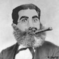
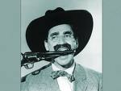
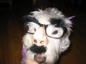

Groucho Marx
 De: La Frikipedia, la enciclopedia extremadamente seria.
De: La Frikipedia, la enciclopedia extremadamente seria.
De la serie grandes personajes:
!Admiradlo mientras está colocado!
| Nacimiento
|
Por suerte,si.
|
| Muerte
|
Por desgracia, si.
|
| Ocupación
|
humorista y filósofo porrero
|
| Nacionalidad
|
americano Jamaicano
|
| Malo o bueno
|
¿Como puedes decir que alguien que se emborracha y fuma porros es malo?
|
| Atentados contra la humanidad
|
Como mucho matar a la gente de risa...
|
| Religión
|
La suya propia
|
| Notas
|
Él, junto a Homer Simpson, es el gran exponente del hombre moderno
|
Grande donde los hay, este es el mejor hombre que ha existido en la faz de la tierra durante un período de tiempo relativamente corto. Este hombre reconocido mundialmente por su bigote(!Ojo, no confundir con Hitler), sus puros mú grandes porros(Ojo, no confundir con Bob Marley) y sus increíbles litronas(Ojo, no confundir con Boris Yeltsin), es el gran filósofo de la era moderna, y una inspiracion para la humanidad del ultimo siglo. En el se inspiraron grandes autores y gente de otra categoría, pero no siguieron el dictamen de su señor en todo momento y acabaron cayendo en desgracia.
Traduciendo, era un personaje comico al que en su tiempo libre (parece ser que tenia demasiado) le encantaba beber hasta emborracharse y fumar puros porros hasta estar tan ciego que soltaba paridas a manta porrilo, eso si, bastante cachondas. Pero como en este mundo hay frikis gente para todo, su doctrina, el marxismo (no confundir con Karl Marx) ha sido mundialmente famosa y adorada durante el ultimo siglo.
Biografía
Groucho Marx nació junto con su hermano encubierto, Karl Marx, en una familia de la clase baja en Holanda Yanquilandia. Sin embargo durante su infancia ambos hermanos huyeron de casa por que se dejaron la puerta abierta los muy cenutrios causas desconocidas, razón por la cual acabaron en familias diferentes y se perdió su parentesco(muchos agentes secretos como 007, la interpol o la legión han intentado encubrir este hecho porque les dió la puta gana por razones de seguridad nacional). Ansí pues Groucho fue acogido por una familia de porreros humoristas, los cuales le inculcaron el muy noble arte del escaqueo de la comedia.
Vida pofesional
Como humorista, Groucho Marx protagonizó algunas de las películas más cachondas profundas de la época, si bien su mayor pasión siempre fue la de escaquearse del curro e irse con sus colegas(a los que llamaba hermanos) para montar un botellón de la leche debate filosófico o sobre el estado de la nación. También en dichos debates solía fumar puros porros de longitudes descomunales los cuales le hacían estar tan ciego que le salían unas paridas que eran casi imposible de superar unos nuevos pensamientos sobre la vida y el mundo.
 aquí observamos el parentesco oculto de Groucho con Karl
Doctrina Marxista
La doctrina Marxista(la del barbudo no, ojo) fue una de las mayores herencias ideológicas que dejo este humorista porrero gran filósofo en este mundo. Groucho, al igual que su hermano encubierto, estaba hasta las pelotas del sistema(básicamente porque no le dejaban fumar en paz) y nunca aceptó ninguna religión que no fuese la suya propia. Dicha religión consistía en escaquearse del curro a la menor oportunidad(cosa que en el mundo del espectáculo no resultaba muy costoso) e irse a pillarse un ciego que no veas debatir sobre metafísica con sus colegas. Esta filosofía de vida sigue siendo muy aceptada y querida por la gente (en especial los killers y demás gente). Pero no intentes seguir esta filosofía si no estás preparado, porque si intentas dar marcha atrás(algo muy difícil), te ocurrirán desdichas que solo el innombrable es capaz de asimilar.
 Groucho no entiende el significado de la palabra "infumable"
Logros de Groucho Marx
Entre los mayores logros de Groucho Marx se encuentran:
- Protagonizar las películas más
cachondas profundas en debates metafísicos que se han visto en el siglo I a.T. (antes de Torrente).
- Ostentar el record mundial de número de paridas soltadas por minuto, record que hasta hoy nadie ha logrado superar (a pesar de que muchos expertos en la materia como Bush, Franco, el Luisma o Jaimito lo hayan intentado... Y sin éxito).
- Ser capaz de entrar en estado
de colocón súbito de inspiración filosófica 27 veces al día.
- Dejar el apellido Marx a la altura de su merecida fama mundial a pesar de las injurias a la familia que provocó su hermano encubierto (!Miserable barbudo!)
- Hacer que Ryuk el shinigami deje su adicción a las manzanas por otras sustancias
más alucinógenas más saludables e inspiradoras.
Frases célebres
- "Perdone señora que no me levante" (Groucho Marx estando tan ciego que no podía ni moverse)
- "Nunca pertenecería a un club que me admitiese como socio" (Groucho al inventar su religión)
- "Estos son mis
principios porros. Si a usted no le gustan, tengo otros." (Groucho tras visitar una clínica de desintoxicación)
- "Nunca olvido una cara. Pero en su caso, estaré encantado de hacer una excepción". (Groucho cuando lo pillaron colocado la primera vez)
- "Desde el momento en que cogí su libro me caí al suelo rodando de risa. Algún día espero leerlo". (Groucho al arrancar las páginas de un libro de Karl para fumarse un peta)
- "He pasado una noche estupenda. Pero no ha sido esta" (Groucho Marx tras quedarse sin litrona)
- "La política es el arte de buscar problemas, encontrarlos, hacer un diagnostico falso y aplicar después los remedios equivocados" (Groucho hablando sobre la prohibición de las drogas)
- "Bebo para hacer interesantes a las demás personas" (Groucho Marx filosofando sobre su razón de existir)
- "Fuera del porro, un libro es probablemente el mejor amigo del hombre, y dentro del porro probablemente esté demasiado colocado para leer" (Groucho hablando sobre su gran pasión)
- "Es mejor estar callado y parecer tonto que hablar y despejar las dudas definitivamente" (Groucho Marx en una reunión de alcolicos anónimos)
Célebres seguidores de la doctrina de Groucho

Bush al descubrir lo buena que era esta ideología(pero no alcanzó su culmen...)
 esto es lo que le pasa a los que no siguen fielmente la ideología.
Enemigos de esta ideología
Razones por las que seguir su ideología
- Porque un día todos los frikis porreros dominarán el mundo en colaboración con Chuck
- Porque hay que mantener el muy noble arte del escaqueo para que no se pierda.
- Para boicotear el sistema (como hubiera querido Groucho)
- Para fomentar la industria y la economía (la de estupefacientes, claro está)
¿Sabías que...
- ... muchas de las teorías económicas de Karl se las plagió a Groucho?
- ... la teoría de supresión de la propiedad privada (una de las bases del marxismo) se le ocurrió a Groucho al quedarse sin litrona?
- ... el epitafio de su tumba "Perdone que no me levante" no existe?
- ... si te fumas más de 30 porros en un día se te puede aparecer en medio del colocón?
- ... este artículo está escrito sin que hayamos fumado alucinógenos de cualquier tipo?
Frikipedia 2005-2016, Licencia
GFDL 1.2 - Extraído por FrikiLeaks